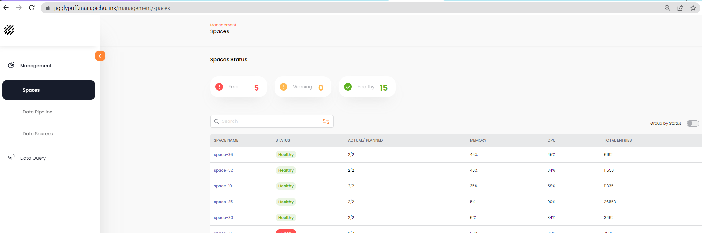

The Spaces Status screen shows the GigaSpaces

Error – fill in all of the pipeline configuration items (shown below) from a
Warning – spaces-status-010memory over 75%
Healthy – spaces-status-020partitions and backup HAVE ENOUGH MEMORY
Group by Status – toggle to show the Spaces grouped by status
Space Name – the name of the GigaSpaces Space object
Status – possible statuses are spaces-status-030 W/H/E W/H/E
Actual/Planned – spaces-status-030 PLANNED TOPOLOGY AND ACTUAL INSTANCES. ACTULA LESS THAN PLANNED IF NOT ENOUGH HOSTS # OF PRIMARY AND BACKUP PAERTITIONS ASK GADI
Memory – percentage of memory used by the Space
Total Entries – number of rows of data in the Space
You can click on a Space name to see detailed information on the Space. See